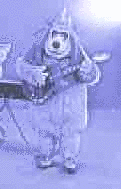
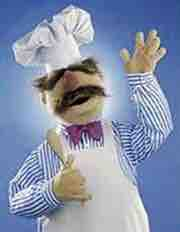
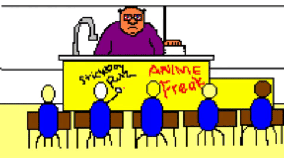
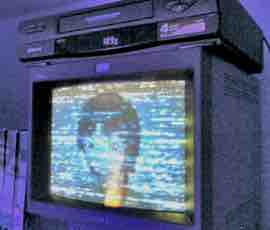
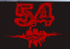
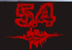

When I was about 11, I was at Waldenbooks browsing the magazines, and I spotted this one-off called The Kookiest Sites on the Web. I didn't have internet access at the time, but I was fascinated by the endless possibilities of the WWW, and I daydreamed about what weird stuff might be out there. This was right up my alley.
Since I couldn't actually visit any of these kooky webpages, I just had to read about them and imagine what they might be like based on the descriptions. I ate it up! But somehow I don't remember any single site the magazine described, just vague impressions of them.
When I finally did get internet access, it was America Online via a 2400 baud modem. I still remember the first webpage I went to. It was an AOL page on The Banana Splits show. I had to wait fourteen minutes for a tiny, compressed, pixelated, monochromatic image of one of the characters to load. I was so excited! And it was excruciating.
In 7th grade, I found Microsoft FrontPage Express 2.0 and decided to make my first website for Geocities. It was mostly composed of pictures I had found on the internet of my favorite characters from movies and TV shows, like the Swedish Chef from the various Muppet movies of the 80s. I also discussed a comic series I was working on at the time, The Many Deaths of Stickboy. Anyhow, I uploaded my site, and to my dismay, all of the images looked like . I would later realize this was because all the URLs were local file paths. I'd never even uploaded the images to the web server.
Also around this time, I met my best friend Matt Hong. He and I worked on ZZT games and Kamishibai stories together. You can still find Stories of West Jr. High and the Kamishibai adaption of The Many Deaths of Stickboy on Otaku World. You can even play our ZZT game Biosmart! on the Internet Archive.
For my 14th birthday, I decided to get my closest friends to all pitch in on a limo ride. The limo had a TV and VHS player, so we had the driver take us to the mall and Matt bought Serial Experiments Lain on VHS at Suncoast Video. We were both way into it! But we only had like the first couple of episodes so we just watched those over and over.
A little bit later I got hold of Paint Shop Pro, realized it sucked, then got Photoshop! I got super into graphic design, hanging out on the forums of endeffect.com, the official site my favorite graphic designer at the time.
I made lots of art, forum signatures, Winamp skins, AOL buddy icons, GIF animations, Flash animations -- you name it! -- and posted most of it on the forums for feedback and some to Deviant Art.
I also built a website with my portfolio called fivepointfour.com. The site went through 5 complete overhauls before it was finally retired. One of these had the entire UI done in pixel art! Unfortunately, the only remains seem to be these tiny previews I found on the Internet Archive's Wayback Machine:
 

So anyway, all that to say: I love this stuff. And I'm sure in another decade or two, I'll be on the Wayback Machine looking for this very page.
Disclaimer: There's a good chance I'm misremembering some of this. But I kind of like that idea.